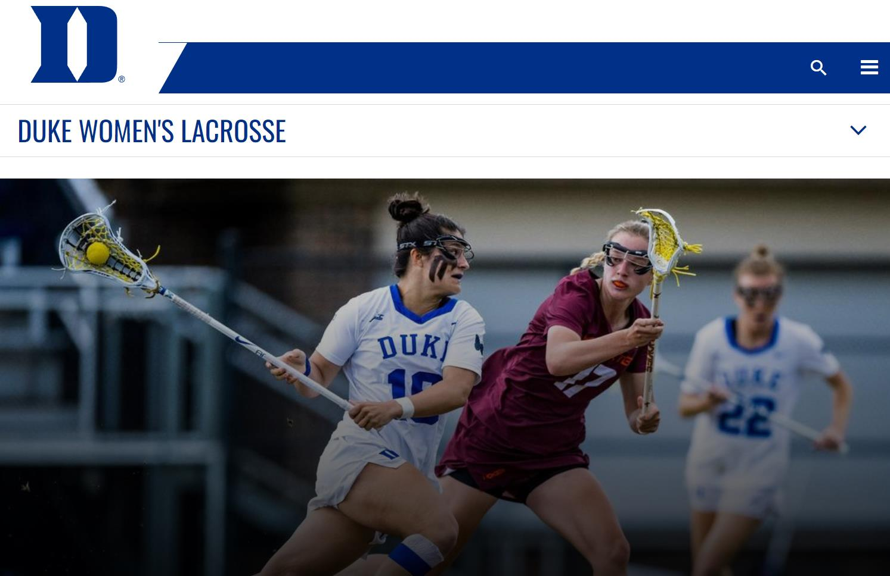

ETL Project: Load Data in MySQL and MariaDB
As a member of the Duke Sport's Women's Lacrosse data analysis group, I have gained hands-on experience in using the ETL (Extract, Transform, Load) process to generate databases and apply analysis for better-informed decision-making and improved business outcomes.
To begin with, I extracted data from the NCAA website using R code and compiled the most recent game data, ensuring accuracy and completeness. I then transformed and loaded this data by setting up a Maria database through Python and SQL, ensuring data consistency and integrity, while also providing a foundation for traceability in analysis.
By leveraging this database, I was able to generate a data report that illustrated trends with the coaching staff, helping them to plan practices and maximize team competitiveness. This involved performing exploratory data analysis, identifying key performance indicators, and creating visualizations to communicate insights to the coaching staff.